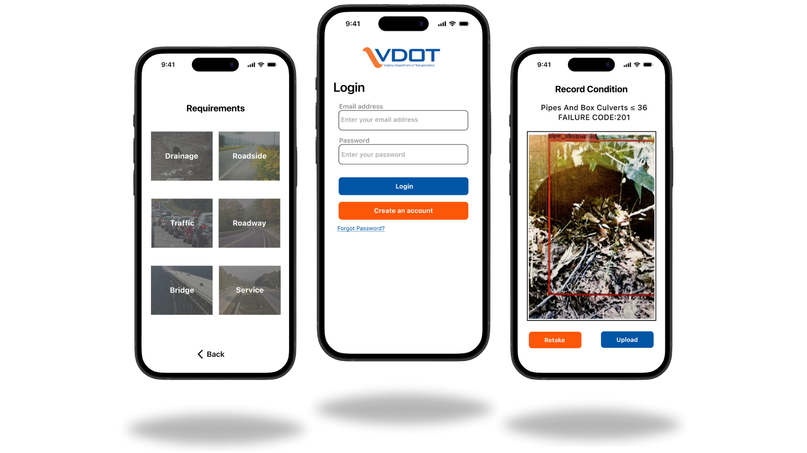

The Virginia Department of Transportation (VDOT) is responsible for building, maintaining, and operating the third-largest state-maintained highway system in the country. VDOT's Maintenance Rating Program (MRP) is designed to provide vital information for making maintenance decisions based on facts and sound judgment.
The VDOT MRP App is a crowdsourcing tool developed to gather condition information of roadway assets from active VDOT maintenance personnel and Virginia roadway network users. The app aims to streamline data collection, improve decision-making, and enhance the overall efficiency of VDOT's maintenance operations.
